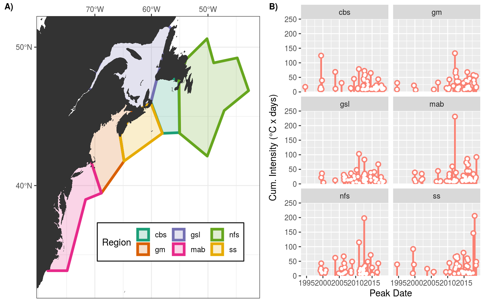

MHW detection
Robert Schlegel
2019-08-22
Last updated: 2020-02-20
Checks: 7 0
Knit directory: MHWNWA/
This reproducible R Markdown analysis was created with workflowr (version 1.6.0). The Checks tab describes the reproducibility checks that were applied when the results were created. The Past versions tab lists the development history.
Great! Since the R Markdown file has been committed to the Git repository, you know the exact version of the code that produced these results.
Great job! The global environment was empty. Objects defined in the global environment can affect the analysis in your R Markdown file in unknown ways. For reproduciblity it’s best to always run the code in an empty environment.
The command set.seed(20190513) was run prior to running the code in the R Markdown file. Setting a seed ensures that any results that rely on randomness, e.g. subsampling or permutations, are reproducible.
Great job! Recording the operating system, R version, and package versions is critical for reproducibility.
Nice! There were no cached chunks for this analysis, so you can be confident that you successfully produced the results during this run.
Great job! Using relative paths to the files within your workflowr project makes it easier to run your code on other machines.
Great! You are using Git for version control. Tracking code development and connecting the code version to the results is critical for reproducibility. The version displayed above was the version of the Git repository at the time these results were generated.
Note that you need to be careful to ensure that all relevant files for the analysis have been committed to Git prior to generating the results (you can use wflow_publish or wflow_git_commit). workflowr only checks the R Markdown file, but you know if there are other scripts or data files that it depends on. Below is the status of the Git repository when the results were generated:
Ignored files:
Ignored: .Rhistory
Ignored: .Rproj.user/
Ignored: LaTeX/SOM_node_summary.docx
Ignored: LaTeX/SOM_node_summary.pdf
Ignored: data/NAPA/NAPA_clim_U.Rda
Ignored: data/NAPA/NAPA_clim_V.Rda
Ignored: data/NAPA/NAPA_clim_W.Rda
Ignored: data/NAPA/NAPA_clim_emp_ice.Rda
Ignored: data/NAPA/NAPA_clim_emp_oce.Rda
Ignored: data/NAPA/NAPA_clim_fmmflx.Rda
Ignored: data/NAPA/NAPA_clim_mldkz5.Rda
Ignored: data/NAPA/NAPA_clim_mldr10_1.Rda
Ignored: data/NAPA/NAPA_clim_qemp_oce.Rda
Ignored: data/NAPA/NAPA_clim_qla_oce.Rda
Ignored: data/NAPA/NAPA_clim_qns.Rda
Ignored: data/NAPA/NAPA_clim_qsb_oce.Rda
Ignored: data/NAPA/NAPA_clim_qt.Rda
Ignored: data/NAPA/NAPA_clim_runoffs.Rda
Ignored: data/NAPA/NAPA_clim_ssh.Rda
Ignored: data/NAPA/NAPA_clim_sss.Rda
Ignored: data/NAPA/NAPA_clim_sst.Rda
Ignored: data/NAPA/NAPA_clim_taum.Rda
Ignored: data/NAPA/NAPA_clim_vars.Rda
Ignored: data/NAPA/NAPA_clim_vecs.Rda
Ignored: data/NAPA/synoptic_vec_states.Rda
Ignored: data/SOM/packet.Rda
Ignored: data/SOM/synoptic_states.Rda
Ignored: data/SOM/synoptic_states_other.Rda
Ignored: data/anom/ALL_anom.Rda
Ignored: data/anom/ALL_other.Rda
Ignored: data/anom/ERA5_mslp_anom.Rda
Ignored: data/anom/ERA5_qnet_anom.Rda
Ignored: data/anom/ERA5_t2m_anom.Rda
Ignored: data/anom/ERA5_u_anom.Rda
Ignored: data/anom/ERA5_v_anom.Rda
Ignored: data/anom/GLORYS_mld_anom.Rda
Ignored: data/anom/GLORYS_u_anom.Rda
Ignored: data/anom/GLORYS_v_anom.Rda
Ignored: data/anom/OISST_sst_anom.Rda
Ignored: data/base/ERA5_lhf.Rda
Ignored: data/base/ERA5_lwr.Rda
Ignored: data/base/ERA5_mslp.Rda
Ignored: data/base/ERA5_qnet.Rda
Ignored: data/base/ERA5_shf.Rda
Ignored: data/base/ERA5_swr.Rda
Ignored: data/base/ERA5_t2m.Rda
Ignored: data/base/ERA5_u.Rda
Ignored: data/base/ERA5_v.Rda
Ignored: data/base/GLORYS_mld.Rda
Ignored: data/base/GLORYS_u.Rda
Ignored: data/base/GLORYS_v.Rda
Ignored: data/base/OAFlux.Rda
Ignored: data/base/OISST_sst.Rda
Ignored: data/clim/ALL_clim.Rda
Ignored: data/clim/ERA5_mslp_clim.Rda
Ignored: data/clim/ERA5_qnet_clim.Rda
Ignored: data/clim/ERA5_t2m_clim.Rda
Ignored: data/clim/ERA5_u_clim.Rda
Ignored: data/clim/ERA5_v_clim.Rda
Ignored: data/clim/GLORYS_mld_clim.Rda
Ignored: data/clim/GLORYS_u_clim.Rda
Ignored: data/clim/GLORYS_v_clim.Rda
Ignored: data/clim/OISST_sst_clim.Rda
Ignored: data/comparison/node_mean_all_anom.Rda
Ignored: data/comparison/packet_all.Rda
Ignored: data/comparison/packet_all_anom.Rda
Ignored: data/comparison/packet_nolab.Rda
Ignored: data/comparison/packet_nolab14.Rda
Ignored: data/comparison/packet_nolabgsl.Rda
Ignored: data/comparison/packet_nolabmod.Rda
Ignored: data/comparison/som_all.Rda
Ignored: data/comparison/som_all_anom.Rda
Ignored: data/comparison/som_nolab.Rda
Ignored: data/comparison/som_nolab14.Rda
Ignored: data/comparison/som_nolab_16.Rda
Ignored: data/comparison/som_nolab_9.Rda
Ignored: data/comparison/som_nolabgsl.Rda
Ignored: data/comparison/som_nolabmod.Rda
Ignored: data/eddy_trajectory_2.0exp_19930101_20180118.nc
Ignored: talk/IMBeR_2019.html
Ignored: talk/MHWNWA.html
Unstaged changes:
Modified: code/functions.R
Modified: output/SOM/air_u_v_mslp_anom.pdf
Modified: output/SOM/air_u_v_mslp_real.pdf
Modified: output/SOM/cum_int_season.pdf
Modified: output/SOM/cum_int_season.png
Modified: output/SOM/duration_rate_onset.pdf
Modified: output/SOM/max_int_region.pdf
Modified: output/SOM/max_int_region.png
Modified: output/SOM/mld_anom_sd.pdf
Modified: output/SOM/msl_anom_sd.pdf
Modified: output/SOM/msl_sd.pdf
Modified: output/SOM/node_10_panels.pdf
Modified: output/SOM/node_10_panels.png
Modified: output/SOM/node_11_panels.pdf
Modified: output/SOM/node_11_panels.png
Modified: output/SOM/node_12_panels.pdf
Modified: output/SOM/node_12_panels.png
Modified: output/SOM/node_1_panels.pdf
Modified: output/SOM/node_1_panels.png
Modified: output/SOM/node_2_panels.pdf
Modified: output/SOM/node_2_panels.png
Modified: output/SOM/node_3_panels.pdf
Modified: output/SOM/node_3_panels.png
Modified: output/SOM/node_4_panels.pdf
Modified: output/SOM/node_4_panels.png
Modified: output/SOM/node_5_panels.pdf
Modified: output/SOM/node_5_panels.png
Modified: output/SOM/node_6_panels.pdf
Modified: output/SOM/node_6_panels.png
Modified: output/SOM/node_7_panels.pdf
Modified: output/SOM/node_7_panels.png
Modified: output/SOM/node_8_panels.pdf
Modified: output/SOM/node_8_panels.png
Modified: output/SOM/node_9_panels.pdf
Modified: output/SOM/node_9_panels.png
Modified: output/SOM/qnet_anom_sd.pdf
Modified: output/SOM/qnet_mld_anom.pdf
Modified: output/SOM/region_season.pdf
Modified: output/SOM/sst_anom_sd.pdf
Modified: output/SOM/sst_sd.pdf
Modified: output/SOM/sst_u_v_anom.pdf
Modified: output/SOM/sst_u_v_real.pdf
Modified: output/SOM/t2m_anom_sd.pdf
Modified: output/SOM/t2m_sd.pdf
Modified: output/SOM/u10_anom_sd.pdf
Modified: output/SOM/u10_sd.pdf
Modified: output/SOM/u_anom_sd.pdf
Modified: output/SOM/u_sd.pdf
Modified: output/SOM/v10_anom_sd.pdf
Modified: output/SOM/v10_sd.pdf
Modified: output/SOM/v_anom_sd.pdf
Modified: output/SOM/v_sd.pdf
Note that any generated files, e.g. HTML, png, CSS, etc., are not included in this status report because it is ok for generated content to have uncommitted changes.
These are the previous versions of the R Markdown and HTML files. If you’ve configured a remote Git repository (see ?wflow_git_remote), click on the hyperlinks in the table below to view them.
| File | Version | Author | Date | Message |
|---|---|---|---|---|
| Rmd | c1d867f | robwschlegel | 2020-02-13 | Poster sorted. Need to add a figure from tikoraluk. |
| Rmd | e9d1b43 | Robert William Schlegel | 2020-02-13 | Received feedback on poster, transitioning figure creation to a dedicated script to accomodate the specific changes necessary. |
| Rmd | 9ee3ee4 | robwschlegel | 2020-02-13 | Poster figures rendered |
| Rmd | a3b88a8 | Robert William Schlegel | 2020-02-12 | Working through a full edit of the workflowr site. This will seque into a write up of the draft manuscript. |
| Rmd | 823a5fd | robwschlegel | 2019-08-28 | Uploaded schematic summary figure and created a new version of the talk |
| html | a7fbd91 | robwschlegel | 2019-08-28 | Build site. |
| Rmd | 59cf771 | robwschlegel | 2019-08-22 | Polished up the variable prep vignette |
| Rmd | e9767c7 | robwschlegel | 2019-08-22 | Working through the pipeline to adapt to the decided methodoloy |
| html | 826c73d | robwschlegel | 2019-08-15 | Build site. |
| html | 143b1a6 | robwschlegel | 2019-08-15 | Build site. |
| html | 20ae166 | robwschlegel | 2019-08-11 | Build site. |
| html | 19bea26 | robwschlegel | 2019-08-11 | Build site. |
| html | 2652a3a | robwschlegel | 2019-08-11 | Build site. |
| html | f0d2efb | robwschlegel | 2019-08-07 | Build site. |
| Rmd | 9a9fa7d | robwschlegel | 2019-08-01 | A more in depth dive into the potential criteria to meet for the SOM model |
| html | aa82e6e | robwschlegel | 2019-07-31 | Build site. |
| Rmd | 51ed681 | robwschlegel | 2019-07-25 | Completed anoms for OISST |
| Rmd | 0b6f065 | robwschlegel | 2019-07-25 | Push before beginning to write code for loading entire obs/reanalysis products into memory for clim calculations |
| html | 7792f24 | robwschlegel | 2019-07-24 | Build site. |
| Rmd | bcee698 | robwschlegel | 2019-07-24 | Edited the polygon and sst prep vignettes while redoing methodology. |
| html | 7cc8ec3 | robwschlegel | 2019-07-24 | Build site. |
| Rmd | 463b89a | robwschlegel | 2019-07-24 | Edited the polygon and sst prep vignettes while redoing methodology. |
| html | 81e961d | robwschlegel | 2019-07-09 | Build site. |
| Rmd | 497eeb2 | robwschlegel | 2019-07-09 | Re-publish entire site. |
| Rmd | 7ff9b8b | robwschlegel | 2019-06-17 | More work on the talk |
| html | c23c50b | robwschlegel | 2019-06-10 | Build site. |
| html | 028d3cc | robwschlegel | 2019-06-10 | Build site. |
| html | c61a15f | robwschlegel | 2019-06-06 | Build site. |
| html | 6dd6da8 | robwschlegel | 2019-06-06 | Build site. |
| Rmd | 25e7e9a | robwschlegel | 2019-06-05 | SOM pipeline nearly finished |
| Rmd | 94ce8f6 | robwschlegel | 2019-06-04 | Functions for creating data packets are up and running |
| Rmd | 65301ed | robwschlegel | 2019-05-30 | Push before getting rid of some testing structure |
| Rmd | 2c3f68c | robwschlegel | 2019-05-28 | Working on the variable prep vignette |
| html | 5cb8e8f | robwschlegel | 2019-05-28 | Build site. |
| html | c09b4f7 | robwschlegel | 2019-05-24 | Build site. |
| Rmd | 5dc8bd9 | robwschlegel | 2019-05-24 | Finished initial creation of SST prep vignette. |
| Rmd | e008b23 | robwschlegel | 2019-05-24 | Push before changing |
| Rmd | 5b6f248 | robwschlegel | 2019-05-23 | More SST clomp work |
| Rmd | 5c2b406 | robwschlegel | 2019-05-23 | Commit before changes |
| html | d544295 | robwschlegel | 2019-05-23 | Build site. |
| Rmd | 9cb3efa | robwschlegel | 2019-05-23 | Updating work done on the polygon prep vignette. |
Introduction
Building on the work performed in the study area vignette, we will now create grouped SST time series for the six regions in our study area. We do this by finding which NOAA OISST pixels fall within each of the region polygons. Also note that throughout this vignette (and this entire project) we will use the climatology period of 1993 – 2018 due to limitations from the data products used for the various heat budget variables needed for the SOM.
# Necessary when being run on a server without write privliges
.libPaths(c("~/R-packages", .libPaths()))
# Packages used in this vignette
library(tidyverse) # Base suite of functions
library(heatwaveR) # For detecting MHWs
# cat(paste0("heatwaveR version = ", packageDescription("heatwaveR")$Version))
library(FNN) # For fastest nearest neighbour searches
library(tidync) # For a more tidy approach to managing NetCDF data
library(SDMTools) # For finding points within polygons
library(lubridate) # For convenient date manipulation
# Set number of cores
doParallel::registerDoParallel(cores = 50)
# Disable scientific notation for numeric values
# I just find it annoying
options(scipen = 999)
# Corners of the study area
NWA_corners <- readRDS("data/NWA_corners.Rda")
# Individual regions
NWA_coords <- readRDS("data/NWA_coords.Rda")
# The base map
map_base <- readRDS("data/map_base.Rda")Pixel prep
Up first we take the lon/lat grid from the 1/4 degree daily NOAA OISST product and find which points fall within each region. We will save this information to allow us to then easily pull out the desired pixels from the cube of OISST data.
# Create the OISST lon/lat grid
OISST_grid <- data.frame(expand.grid(c(seq(0.125, 179.875, by = 0.25),
seq(-179.875, -0.125, by = 0.25)),
seq(-89.875, 89.875, by = 0.25)))
colnames(OISST_grid) <- c("lon", "lat")
# Trim down OISST grid for faster processing
OISST_grid_region <- OISST_grid %>%
filter(lon >= min(NWA_coords$lon),
lon <= max(NWA_coords$lon),
lat >= min(NWA_coords$lat),
lat <= max(NWA_coords$lat))
# Function for finding and cleaning up points within a given region polygon
pnts_in_region <- function(region_in){
region_sub <- NWA_coords %>%
filter(region == region_in)
coords_in <- pnt.in.poly(pnts = OISST_grid_region[1:2], poly.pnts = region_sub[2:3]) %>%
filter(pip == 1) %>%
dplyr::select(-pip) %>%
mutate(region = region_in)
return(coords_in)
}
# Run the function
NWA_info <- plyr::ldply(unique(NWA_coords$region), pnts_in_region)
# saveRDS(NWA_info, "data/NWA_info.Rda")
# Visualise to ensure success
ggplot(NWA_coords, aes(x = lon, y = lat)) +
geom_polygon(aes(fill = region), alpha = 0.2) +
geom_point(data = NWA_info, aes(colour = region)) +
geom_polygon(data = map_base, aes(group = group), show.legend = F) +
coord_cartesian(xlim = NWA_corners[1:2],
ylim = NWA_corners[3:4]) +
labs(x = NULL, y = NULL)
SST prep
With the OISST pixels successfully assigned to regions based on their thermal properties we now average the SST data per pixel into one mean time series per region.
# The OISST data location
OISST_files <- dir("../../data/OISST", full.names = T)
# The files with data in the study area
OISST_files_sub <- data.frame(files = OISST_files,
lon = c(seq(0.125, 179.875, by = 0.25),
seq(-179.875, -0.125, by = 0.25))) %>%
filter(lon >= min(NWA_info$lon), lon <= max(NWA_info$lon)) %>%
mutate(files = as.character(files))
# Function for loading the individual OISST NetCDF files and subsetting SST accordingly
load_OISST_sub <- function(file_name, coords = NWA_info){
res <- tidync(file_name) %>%
hyper_filter(lat = dplyr::between(lat, min(coords$lat), max(coords$lat)),
time = dplyr::between(time, as.integer(as.Date("1993-01-01")),
as.integer(as.Date("2018-12-31")))) %>%
hyper_tibble() %>%
mutate(time = as.Date(time, origin = "1970-01-01")) %>%
dplyr::rename(temp = sst, t = time) %>%
select(lon, lat, t, temp) %>%
left_join(coords, by = c("lon", "lat")) %>%
filter(!is.na(region))
return(res)
}
# Put it all together
system.time(
OISST_region <- plyr::ldply(OISST_files_sub$files,
.fun = load_OISST_sub,
.parallel = TRUE) %>%
group_by(region, t) %>%
summarise(temp = mean(temp, na.rm = T)) %>%
ungroup()
) # 18 seconds
# Save
# saveRDS(OISST_region, "data/OISST_region.Rda")MHW detection
With our clumped SST time series ready the last step in this vignette is to detect the MHWs within each.
# Load the time series data
OISST_region <- readRDS("data/OISST_region.Rda")
# Calculate MHWs
system.time(
OISST_region_MHW <- OISST_region %>%
group_by(region) %>%
nest() %>%
mutate(clims = map(data, ts2clm,
climatologyPeriod = c("1993-01-01", "2018-12-31")),
events = map(clims, detect_event),
cats = map(events, category, S = FALSE)) %>%
select(-data, -clims)
) # 2 seconds
# saveRDS(OISST_region_MHW, "data/OISST_region_MHW.Rda")With the MHWs detected, let’s visualise the results to ensure everything worked as expected.
# Load MHW results
OISST_region_MHW <- readRDS("data/OISST_region_MHW.Rda")
# Events
OISST_MHW_event <- OISST_region_MHW %>%
select(-cats) %>%
unnest(events) %>%
filter(row_number() %% 2 == 0) %>%
unnest(events)
MHW_lolli_plot <- ggplot(data = OISST_MHW_event , aes(x = date_peak, y = intensity_cumulative)) +
geom_lolli(colour = "salmon", colour_n = "red", n = 0) +
labs(x = "Peak Date", y = "Cum. Intensity (°C x days)") +
scale_y_continuous(limits = c(0, 250), expand = c(0,0)) +
facet_wrap(~region, ncol = 2)
# ggsave(plot = MHW_lolli_plot, filename = "output/MHW_lolli_plot.pdf", height = 6, width = 5)
# ggsave(plot = MHW_lolli_plot, filename = "output/MHW_lolli_plot.png", height = 6, width = 5)
# Visualise
MHW_lolli_plot
The lolliplot above shows us that the occurrence of MHWs differs visually between the regions, which is good. A striking early result from this figure is that the distribution of the occurrence of MHWs is left skewed. This means that most of the MHWs are happening later on in the time series. In fact, there are no MHWs detected in the first year of the time series (1993), and only four MHWs detected in the second year (1994) across all regions combined. We don’t start to see regular annual occurrence of MHWs until ~1999. This is a classic climate change signal. But it is important to note again that we are using a climatology period of 1993 – 2018 due to data limitations. This will have the effect of raising the mean climate signal up more than the established WMO period of 1981 – 2010. The practical effect of this is that we will have an even more pronounced skewness of extreme events towards the end of the time series and the overall intensities of events will be slightly lower.
Finally for this section we will visualise the regions from the previous vignette alongside the lolliplot created here.
# Note that the package cowplot is used below but not loaded explicitly
# This is because it changes the default plotting nature in ways I don't like
# The study area map from the revious vignette
load("output/NWA_study_area.Rdata")
# Merge the panels together
MHW_region_lolli <- cowplot::plot_grid(NWA_study_area, MHW_lolli_plot, labels = c('A)', 'B)'), label_size = 10,
align = 'hv', rel_widths = c(1.2, 1), nrow = 1, axis = "l")
# ggsave(plot = MHW_region_lolli, filename = "output/MHW_region_lolli.pdf", height = 4, width = 10)
# ggsave(plot = MHW_region_lolli, filename = "output/MHW_region_lolli.png", height = 4, width = 10)
MHW_region_lolli
Up next in the heat budget variable preparation vignette we will go through the steps necessary to build the data that will be fed into our self-organising map (SOM) as seen in the SOM analysis vignette.
References
sessionInfo()R version 3.6.2 (2019-12-12)
Platform: x86_64-pc-linux-gnu (64-bit)
Running under: Ubuntu 16.04.6 LTS
Matrix products: default
BLAS: /usr/lib/openblas-base/libblas.so.3
LAPACK: /usr/lib/libopenblasp-r0.2.18.so
locale:
[1] LC_CTYPE=en_CA.UTF-8 LC_NUMERIC=C
[3] LC_TIME=en_CA.UTF-8 LC_COLLATE=en_CA.UTF-8
[5] LC_MONETARY=en_CA.UTF-8 LC_MESSAGES=en_CA.UTF-8
[7] LC_PAPER=en_CA.UTF-8 LC_NAME=C
[9] LC_ADDRESS=C LC_TELEPHONE=C
[11] LC_MEASUREMENT=en_CA.UTF-8 LC_IDENTIFICATION=C
attached base packages:
[1] stats graphics grDevices utils datasets methods base
other attached packages:
[1] lubridate_1.7.4 SDMTools_1.1-221 tidync_0.2.3
[4] FNN_1.1.2.1 heatwaveR_0.4.2.9001 forcats_0.4.0
[7] stringr_1.4.0 dplyr_0.8.4 purrr_0.3.3
[10] readr_1.3.1 tidyr_1.0.2 tibble_2.1.3
[13] ggplot2_3.2.1 tidyverse_1.3.0
loaded via a namespace (and not attached):
[1] httr_1.4.1 jsonlite_1.6.1 viridisLite_0.3.0 foreach_1.4.4
[5] R.utils_2.7.0 modelr_0.1.5 assertthat_0.2.1 cellranger_1.1.0
[9] yaml_2.2.1 pillar_1.4.3 backports_1.1.5 lattice_0.20-35
[13] glue_1.3.1 digest_0.6.23 RColorBrewer_1.1-2 promises_1.1.0
[17] rvest_0.3.5 colorspace_1.4-1 cowplot_0.9.3 plyr_1.8.5
[21] htmltools_0.4.0 httpuv_1.5.2 R.oo_1.22.0 pkgconfig_2.0.3
[25] broom_0.5.3 haven_2.2.0 scales_1.1.0 whisker_0.4
[29] later_1.0.0 git2r_0.26.1 farver_2.0.3 generics_0.0.2
[33] withr_2.1.2 lazyeval_0.2.2 cli_2.0.1 magrittr_1.5
[37] crayon_1.3.4 readxl_1.3.1 evaluate_0.14 R.methodsS3_1.7.1
[41] fs_1.3.1 ncdf4_1.17 fansi_0.4.1 doParallel_1.0.15
[45] nlme_3.1-137 xml2_1.2.2 tools_3.6.2 data.table_1.12.8
[49] hms_0.5.3 lifecycle_0.1.0 plotly_4.9.1 munsell_0.5.0
[53] reprex_0.3.0 compiler_3.6.2 RNetCDF_2.1-1 rlang_0.4.4
[57] grid_3.6.2 iterators_1.0.10 rstudioapi_0.10 htmlwidgets_1.5.1
[61] labeling_0.3 rmarkdown_2.0 gtable_0.3.0 codetools_0.2-15
[65] DBI_1.0.0 R6_2.4.1 ncmeta_0.2.0 knitr_1.27
[69] workflowr_1.6.0 rprojroot_1.3-2 stringi_1.4.5 parallel_3.6.2
[73] Rcpp_1.0.3 vctrs_0.2.2 dbplyr_1.4.2 tidyselect_1.0.0
[77] xfun_0.12